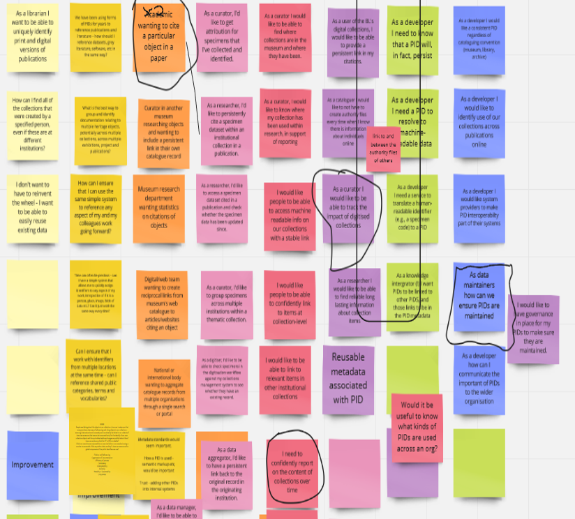
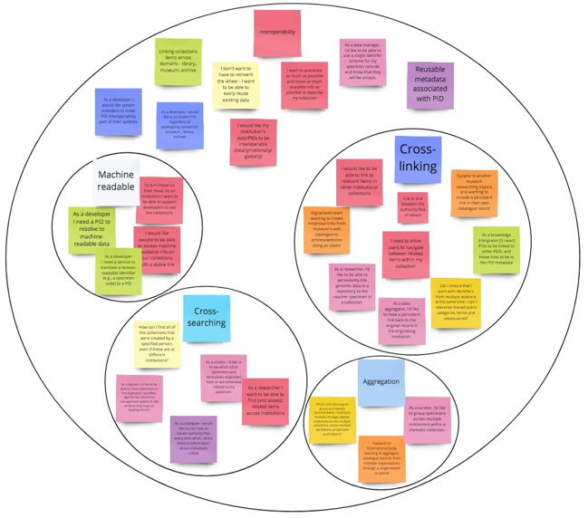
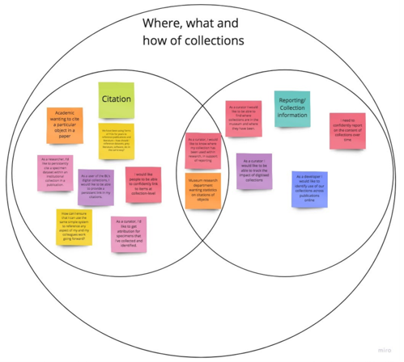

Frances Madden (orcid.org/0000-0002-5432-6116)
Posted 21 April 2021.
On 21 April the Heritage PIDs project held a workshop where we launched a new resource - Developing Identifiers for Heritage Collections. This resource was developed following the findings of the survey the project ran throughout summer 2020. The findings of the survey were that respondents generally knew about PIDs but they weren't sure what to do next. In response to this the project decided to develop a matrix of requirements for PIDs at different levels of complexity so heritage professionals could see examples of 'end goals'. The original idea was to develop something similar to 5* Linked Open Data but the idea grew a lot along the way!
What did we do?
We started with the idea of 'levels' of PID implementation, starting with something very simple moving through increasing levels of complexity. To work out what these different levels are, we held a project workshop in January 2021 where we gathered as many use cases as possible using a Kanban exercise on a Miro board. In total over 100 use cases of where and when PIDs can be used in a cultural heritage setting and how they can help professionals in their work. A Kanban exercise allows participants to refine and iterate ideas. Participants in the workshop brought at least five use cases to the workshop. During the Kanban exercise we went around in a virtual circle iterating on each other's ideas. As you can see from the image, it got quite messy!
Screenshot of categorised use cases for PIDsFollowing the workshop, these were sorted into different categories and based on the frequency with which they occurred importance was assigned to these various levels.
The categories were:
- Interoperability
- Where, what and how of collections
- Long-term-ness
- Versioning
Screenshot of categorised use cases for PIDs
By far the vast majority of use cases related to the 'Interoperability' theme. Interoperability represents a collection of different categories which were eventually grouped together.
- Cross-linking
- Cross-searching
- Aggregation
- Machine Readability
The Where, what and how of collections also had several sub-categories:
- Citation
- Reporting
- Collection information
Screenshot of categorised use cases for PIDs
Based on these categories, the following levels were determined as a first iteration of the level of PIDs.
| Level |
Description |
| 1 |
Externally-created persistent identifiers are included for items and entities within metadata. |
|---|
| 2 |
Items and entities are assigned identifiers which could be machine readable and persistent.
|
|---|
| 3 |
Items and entities are assigned identifiers which are externally resolvable in a human readable format.
|
|---|
| 4 |
Items and entities are assigned identifiers which are resolvable in a machine readable format.
|
|---|
| 5 |
Items and entities are assigned globally persistent, universally resolvable and maintained identifiers.
|
|---|
When the project discussed these levels as a whole, several issues came up. It became clear we needed to establish a baseline implementation so, a Level 0. It also became clear that these levels were never going to be an entirely linear progression and we also needed to acknowledge that an institutional commitment to persistence was needed.
While we had hoped that we could hold all the information needed for this resource within a table, it became clear that there was too much information for anything readable to be created. We felt it was important we gave an explanation for what we meant and that we communicated the benefits of each level. We also wanted to be able to map these against different PID types which met this criteria.
The next version was more akin to what we have now. Rather than focusing on different levels we decided to focus on the different aspects of implementing persistent identifiers and how it can be done, we tried to have a standard layout which focuses on the potential benefits, the risks and dependencies as well as linking to examples of similar implementations from other cultural heritage organisations. In addition to the pages outlining the different aspects we have also included mappings of use cases to the different aspects as well as listing different PID types and how they meet the different aspects.
In parallel we were discussing how we may gain feedback for this resource and how to publish it. We decided that Github would provide a useful way to track comments and changes to the resource. Anyone using the resource could raise a Github issue describing any changes or comments they had for the resource. As you need a Github account to raise an issue, we also decided to use another feedback tool, Usersna, where you can select a section of the screen and leave comments or suggestions.
What's next?
This resource is open for consultation until the end of May 2021 at which point we will update it. We will continue to update this resource throughout 2021 until the end of the Heritage PIDs project. It will be updated on a best efforts basis after that until the end of the Towards a National Collection to reflect the changes in the environment which we hope take place.
The next stage for us is to compile guidance about how to develop each of these aspects. We would love to hear from you with your implementations and examples. If you have something to share, please fill in this Google Form.
What you can do?
Please have a look at the resource and leave any comments. If you use it to inform your decision making, let us know!